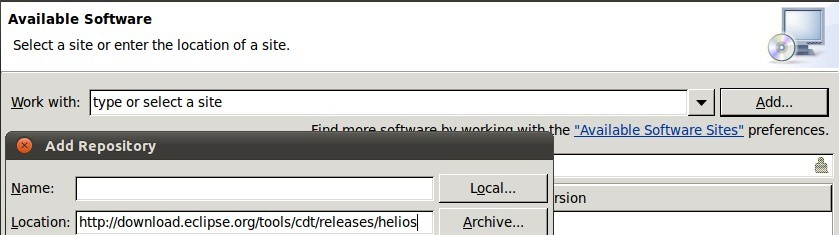
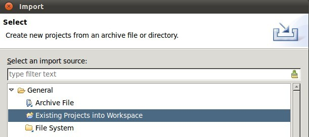
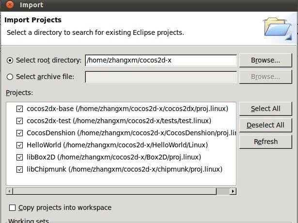

Cocos2d-x引擎自Cocos2d-1.0.1-x-0.9.2版本以来支持Linux平台。 本文介绍如何在Linux及Android模拟器中运行HelloWorld及测试项目。 运行环境为Ubuntu 11.04 + eclipse3.7。
a) 执行以下命令从git获取最新的Cocos2d-x源代码（不稳定）：
git clone https://github.com/cocos2d/cocos2d-x.gitb) 从以下网站下载发行版源代码（稳定）：
http://cn.cocos2d-x.org/download
安装Android SDK请参见 http://developer.android.com/sdk/index.html。
请用以下方法安装JDK
sudo add-apt-repository "deb http://archive.canonical.com/ lucid partner"
sudo apt-get update
sudo apt-get install sun-java6-jdk打开Eclipse依次单击Help -> Install New Software... -> Add...如下图所示。

CDT链接为 http://download.eclipse.org/tools/cdt/releases/helios。
sudo apt-get install libgl1-mesa-dev libglfw-dev freeglut3-dev libzip-dev如果执行该命令遇到问题，可尝试在安装库之前运行以下命令：
sudo apt-get -f首先，编译所有库
cd $COCOS2DX
./build_linux.shCOCOS2DX是Cocos2d-x的根目录。用makefile运行很简单。如下：
cd $HELLOWORLD/linux/
make
./HelloWorldHELLOWORLD是helloworld的根目录，在本机环境的路径为“/home/zhangxm/cocos2d-x/HelloWorld”。你可以用相同的方法运行测试项目，很简单吧？
首先，导入现存项目，依次单击File -> Import...。如下所示：

然后选择Cocos2d-x根目录。

现在你可以编译运行HelloWorld及测试项目。